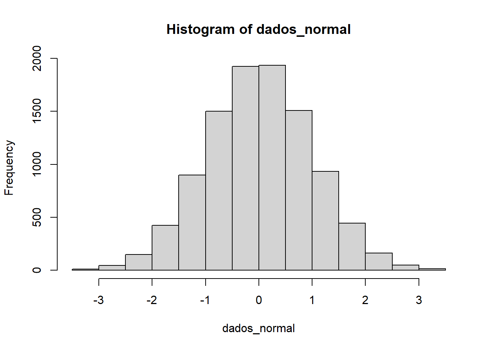

3.6 Transformações
Vários procedimentos estatísticos são baseados na posição que os dados possuem uma distribuição em forma de sino (distribuição normal) ou que a distribuição seja mais ou menos simétrica:
# Simula 500 dados de uma distribuição normal
dados_normal <- rnorm(n = 10000)
# Gráfico de suas frequências
hist(dados_normal)
Se quisermos utilizar tais procedimentos podemos efetuar transformações nas observações, de modo a se obter uma distribuição mais simétrica e próxima da normal. As transformações mais frequentemente utilizadas são:
\[ x = \left\{\begin{matrix}&\sqrt{x}\\ &\ln(x) \\&\frac{1}{x}\end{matrix}\right. \]
para cada transformação obtemos gráficos apropriados para os dados originais e transformados, de modo a escolhermos o valor mais adequado de \(p\).
dados_gamma <- rgamma(n = 300, shape = 1)
par(mfrow = c(2,2)) # MultiFrame rowwise layout
hist(dados_gamma)
hist(sqrt(dados_gamma))
hist(1/dados_gamma)
hist(log(dados_gamma))